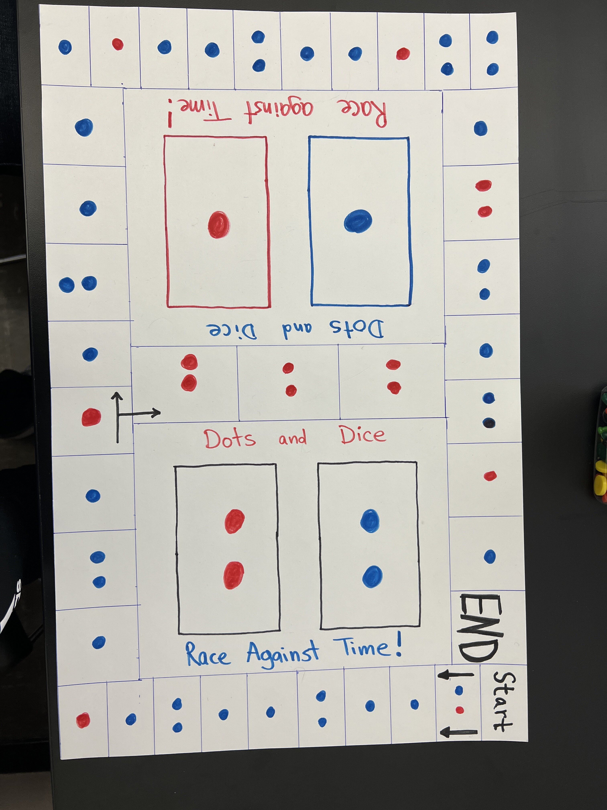

Dots and Dice: Race Against Time is a board game where 1–4 players work together to traverse a board using two dice and a pawn per player. Complete time-restricted challenges that pop up without failing, and reach the end. Players choose between a shorter, more difficult path or a longer, easier path. Fail a round and everyone goes back to the starting position. Grab your dice, land on some dots, and roll away!
Physical · Board Game · Game Design
Dots and Dice!
Race Against Time — a cooperative board game I designed from scratch with custom cards and a real-time challenge mechanic.
Real-TimeDice Rolling
Cooperative1-4 Players
The Game
Development Journey
Version 0 — Initial Design
The initial board before the first playtest. The theme at this point was treating patients in a hospital, where every tile had different patients you'd treat by rolling the dice numbers shown on notecards.

Version 1 — First Playtest, Feb 14, 2022 (SJSU)
The first playtest with my partner Rheya established the core mechanics: Dice Rolling for movement, Real-Time pressure during rounds (35-second limit), and Cooperative play. We added a shorter difficult path and a longer easier path, plus varied dot difficulties. The game felt good — the only issue was that the rules took too long to explain.

Version 2 — Second Playtest (Family)
I simplified the theme significantly. Instead of matching dice to body part patterns, players just roll dice that add up to the number on the flipped card — similar to craps at a casino. Easy enough for anyone to understand, regardless of age or language. I also lowered the time constraint from 35 to 30 seconds after playtesting with my parents, to increase the challenge of the shorter path. Added four separate card stacks for easier grabbing and improved visual design.


Version 2 — Third Playtest (Class)
Two classmates played and I explained the rules in five sentences. That was my target — if I needed more, the design needed work. No core mechanic changes were needed. The game was fun, polished, and visually appealing. The only discovery: the game actually supports up to four players, limited only by desk space and dice availability.
Final Mechanics
The core mechanics stayed consistent from version 0 through version 2 — most refinement came in board layout and tile dot placement, not the underlying rules.
- Real-Time — 30-second challenge windows create urgency and risk
- Dice Rolling — movement and challenge resolution
- Cooperative Game — players progress together and share consequences